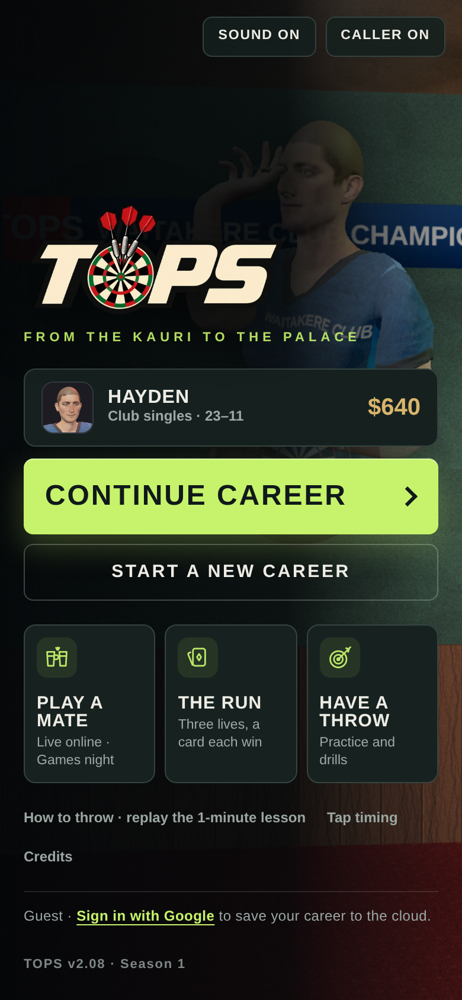
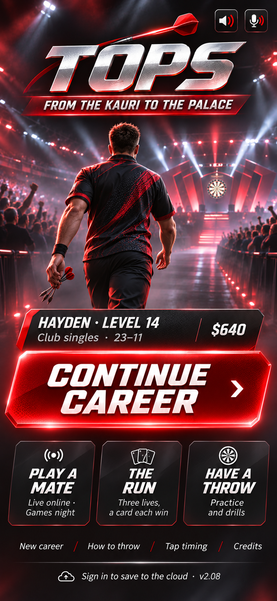
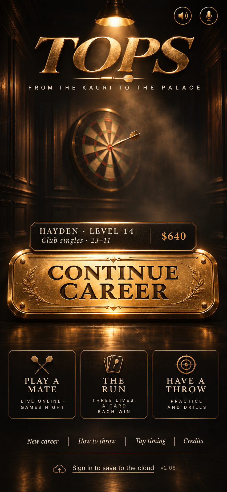
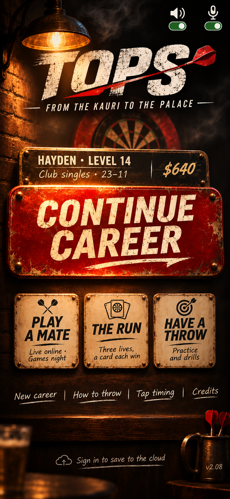
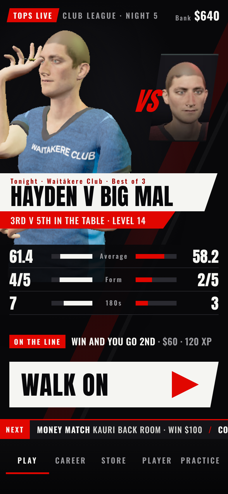
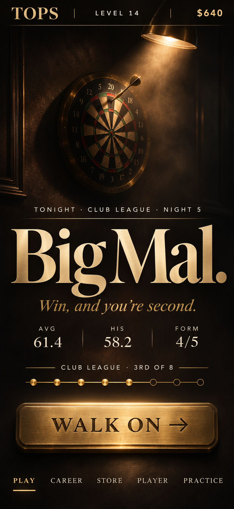
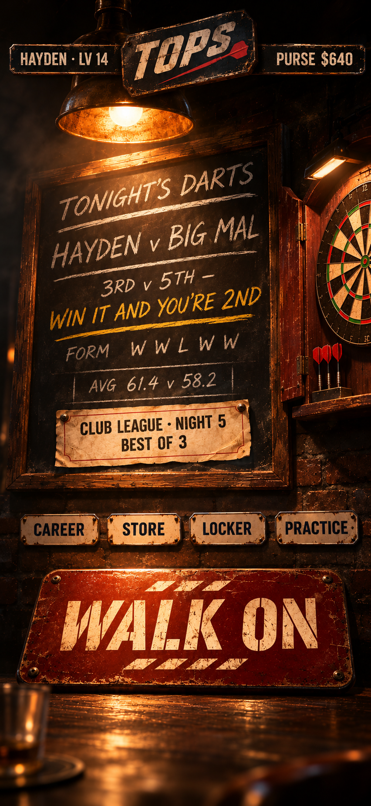

Round 3: the screen the app opens on, not the career hub. Every option that's on today's title screen and nothing invented: Continue career first, then Play a mate, The Run and Have a throw, then the small stuff (New career, How to throw, Tap timing, Credits, sound, caller, sign-in). Concepts only: nothing has changed in the game.

Today
Everything is there, but it looks like a settings page: flat lime button, flat tiles, and a character half-hidden behind the logo.

Broadcast
Your walk-out on a big TV night. Chrome logo, packed arena, a huge glowing red Continue career, three dark glass tiles. The most "top sports game" of the three. Needs a lit render of your own player

Luxury
Calm and expensive. A spotlit board in a dark room, a gold serif logo and an engraved brass Continue career, the only bright thing on screen. Easiest to build faithfully

Pub
Your local, made of real signs. A painted red Continue career sign under the lamp, cream enamel signs for the other modes, chalk for the small links. Needs painted pub art
Earlier · career hub ideas
Round 2: three directions, each designed as a finished image rather than built by hand, so you can judge the look first. Pick one and it gets built properly in the game. Same mid-career save, phone size. Concepts only: nothing has changed in the game.

Broadcast
Tonight as a big TV darts night. Arena lights and haze, you and Big Mal as hero cut-outs, a chrome VS strap, the tale of the tape, "Win and you go 2nd" and a huge red Walk on. Loudest and most like a top sports game. In-game, the two men become our own rendered characters

Luxury
Calm, premium, one decision. A spotlit board in the dark, a huge serif "Big Mal.", three stats, a brass league track and an engraved brass Walk on. The most grown-up of the three. Easiest to build faithfully

Pub
Your local's fixture board under the lamp. The match chalked up with the stake in yellow, enamel signs for Career, Store, Locker and Practice, and a painted Walk on sign on the bar. The warmest and most "ours". Needs painted art for the room
Each pick is the stronger of two generations; the other is in wip/home/gen/.
Round 1 · layouts in today's style
Not picked. Three layouts for the career hub, mocked at phone size (390×844) with a mid-career save: Club League week 5 of 8, 3rd of 8, level 14. Everything uses the game's own art, type and colours. Concepts only: nothing has changed in the game. Scores are ChatGPT's, out of 10 for a phone player, after three review rounds.
Today7.2
Good art and a clear Walk on, but it never says where you stand or why tonight matters. "FILL-IN" jargon, equal-weight blocks, progress below the fold.
A · Tonight9.0
One big next action. You vs him at a glance, the stake as the headline ("Win and you go 2nd"), a giant Walk on under your thumb, three specific extras below. Build: low–medium · ~1 day
B · Your local9.0
The pub is the menu. Places in the room are the buttons: Wall of fame, The oche, Back room up front, the bar and your locker behind. Tonight's match sits on the pub's chalkboard. Build: medium (painted) – high (live 3D) · 2–3 days
C · Dashboard8.9
Your career at a glance. The promotion race as the headline, Walk on second, the league table with tonight's opponent flagged, your rival, cards, contract and trophies. Build: medium · ~1.5 days + rival stats